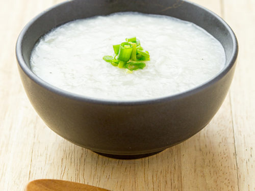

Here's a basic recipe for congee

Rice porridge eaten in Asian countries, or wherever!
"Congee may be a simple dish, but it's a reminder that even the humblest of ingredients can create a meal fit for a hard-working proletariat."
Ingredients:
- 1 cup of white rice
- 8 cups of water or chicken broth
- Salt, to taste
- Optional toppings: chopped scallions, cilantro, shredded chicken, sliced ginger, soy sauce, sesame oil
Instructions:
- Rinse the rice in cold water and drain.
- In a large pot, bring the water or chicken broth to a boil.
- Add the rice to the pot and stir well.
- Reduce the heat to low and let the rice simmer for about 1 hour, stirring occasionally. The congee should have a porridge-like consistency.
- Season with salt to taste.
- Serve hot with your preferred toppings.
Note: You can adjust the consistency of the congee by adding more water or reducing the cooking time. You can also add other ingredients such as mushrooms, shrimp, or pork to the congee for added flavor. Enjoy!